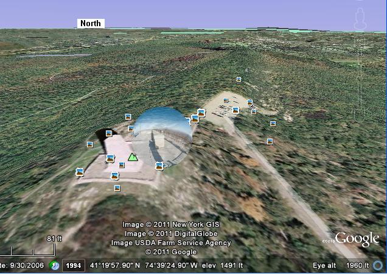

2011 Report: Gordon Beattie, W2TTT and Steve Holly, WI2W set up an alternate test site on High Point on Sunday, but didn't have any APRS radios that could digipeat. They used two Alinco DR-135TP radios with the packet interface installed connected to two copper pipe J-poles. The reason for this test is because this site could be a possible one-hop bypass of Camelback and Sam's Point.
If Highpoint could reliably hear GD Hill and Greylock in Massachussets, then we might be able to use one less hop next year. The goal this year was for Gordon and Steve, to capture packets for 4 hours at their site so we could analyze the paths later. See their packet log. Bob analyzed the data and found 4 anomalous paths of note. See his summary.
It appears that this will not work. Not a single packet was heard direct from Greylock or GD Hill.
Unfortunately, they had to leave their gear operating in the parking lot about 50' below the monument peak. This could have blocked the direct path in both directions depending on exact angles. Their log seems to show that all packets they heard were only via the adjacent Camelback and Sam's point digis. See their 2011 report.
Prior Reports: None. This site has not been tried before.
Highpoint, NJ: This site is a great drive-up park with monument as seen to the right. But if you zoom in like this on Google Earth, you will see a clear bubble grow as you get closer. Click on the bubble and you get a full 360 dgree view as if you are standing right there. You can look at your feet and see the cracks in the concrete, or turn and look up at the monument, or look anywhere else with your mouse. It is amazing!. The Google Earth views are fantastic for Shack-Potato hams, but we hope someone will go there each year to help us with this event!
 See the Golden Packet plan. . This is one of the 15 hill-top sites from Georgia to Maine we hope to visit each summer in late July for 4 hours to attempt to relay a text message using hand-held radios the 2000 mile length of the Appalachain trail. This is to be a no impact Leave-No-Trace type of event of a few individuals at each site. . Other hikers equipped with APRS ham radios are welcome to participate with advance notice.
ALTITUDE: . . . . . . . . . . . . 1800 feet
POSITION:. . . . . . . . . . . . . 4119.39N / 7439.62W
LINK NORTHEAST: . . . . Again, this is a STRETCH site to see if we can bypass Camelback and Sam's point
and get to Mt Greylock and GD hill in one hop.
. . . . . . . . . . . . . . . . . . . . . . . Mount Greylock
RF details
by John, KX4O
LINK SOUTHWEST: . . . . GD Hill, PA
(bypassing Camelback).
RF details
by KX4O
VOICE REPEATER: . . . . .TBD )
. . . . . . . . . . . . . . . . . . . . . . Note...
ECHOLINK NODE: . . . . TBD
INTERFERRENCE: . . . . TBD
. . . . . . . . . . . . . . . . . . . . . . When testing... TBD
TEAM LEADER:. . . . . . . Gordon Beattie, W2TTT, w2ttt at att dot net
. . . . . . . . . . . . . . . . . . . . . . Steve Holly, WI2W, sgholly at optonline dot net
EQUIPMENT: . . . . . . . . . Alinko DR-135 with a 40' omni mast
COMMENTS: .
Bob, WB4APR
See my other GENERAL page on APRS applications and Ideas on the AT
Return to the APRS HOMEPAGE or SiteMap.